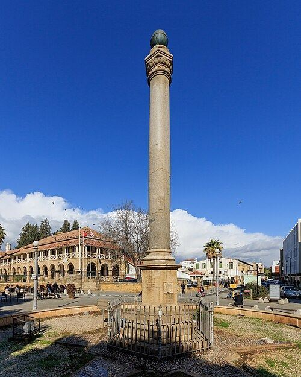
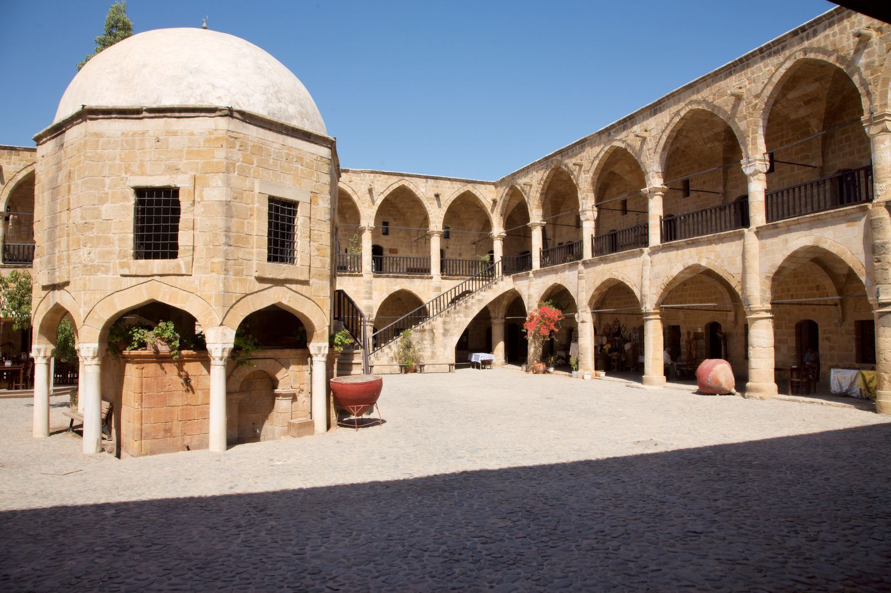
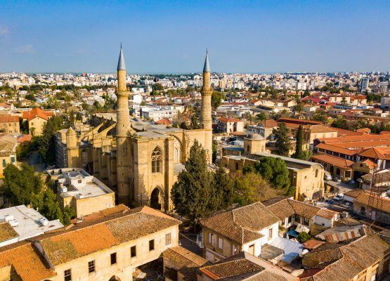
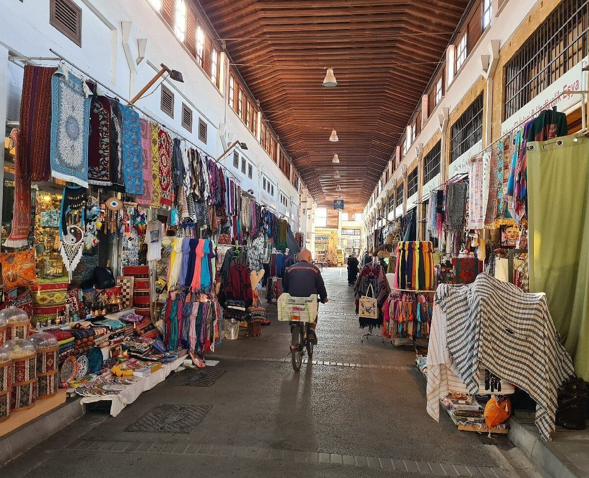
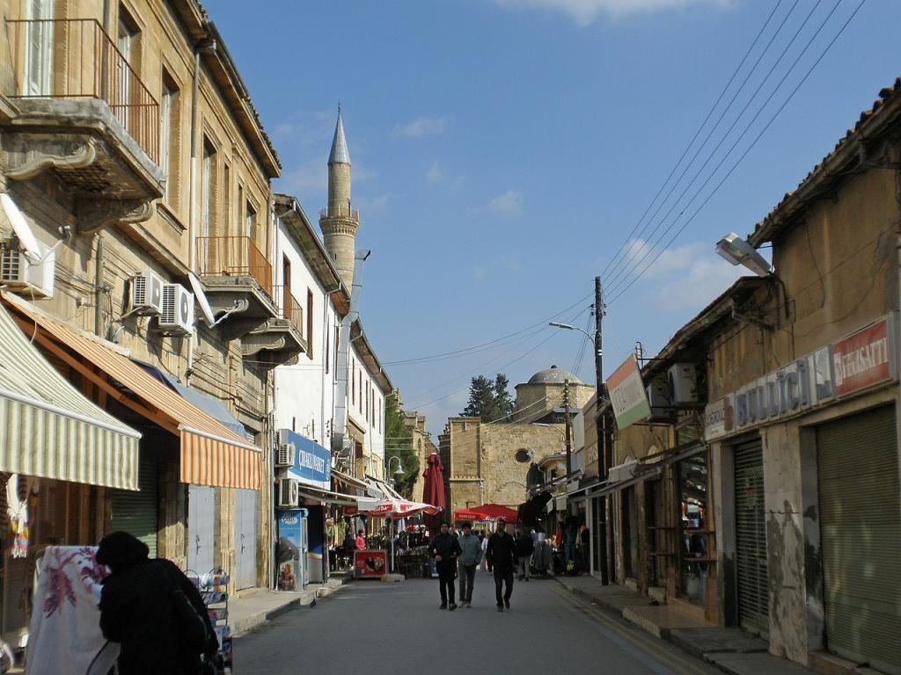

Büyük Han 1572'de — Osmanlıların Lefkoşa'yı Venediklilerden almasından sadece bir yıl sonra — inşa edildi ve Bursa'daki Koza Han model alındı. Selimiye Camii ise hayatına 13. yüzyılda Gotik St. Sophia Katedrali olarak başladı ve ancak 1571'deki Osmanlı fethinden sonra camiye dönüştürüldü.
Etkileşimli Rota Zaman Çizelgesi
Yola çıkmadan önce rota hakkında hızlı bir fikir edinmek için bu gömülü haritayı kullanın, ardından aşağıdaki durakları sırayla takip edin.
Duraklar
Zaman çizelgesini sırayla takip edin, ancak zamana, hava durumuna ve çalışma saatlerine bağlı olarak rotayı esnek tutun.
Girne Kapısı, Venedikliler tarafından 1562 yılında Lefkoşa'nın yıldız şeklindeki surlarının bir parçası olarak inşa edilmiştir ve başlangıçta Porta del Proveditore olarak adlandırılmıştır. Mağusa Kapısı ve Baf Kapısı ile birlikte suriçinde ayakta kalan üç kapıdan biridir ve yüzyıllar boyunca başkenti liman kenti Girne'ye bağlayan ana yol olmuştur.
🚶♂️ Girne Caddesi'nden aşağı 10 dk yürüyüş (700m)
🏛️

Sarayönü / Atatürk Meydanı
Geleneksel binaların, belediye binalarının ve yerel kafelerin aynı hizada bulunduğu merkezi bir kentsel buluşma noktası.
Bu meydan, Lüzinyan ve daha sonra Osmanlı "Saray"ının bulunduğu yerdedir — bu nedenle "sarayın önü" anlamına gelen Sarayönü adı verilmiştir. Bugün büyük bir Atatürk anıtına ev sahipliği yapmakta ve Kuzey Lefkoşa'nın günlük yaşamının gayri resmi kalbi olarak işlev görmektedir.
🚶♂️ Yaya bölgelerinden 4 dk yürüyüş (300m)
🏛️📸 En İyi Fotoğraf Noktası

Büyük Han
Adadaki en güçlü kültürel noktalardan biri. Bu restore edilmiş Osmanlı hanı, avlusunda zanaatkar dükkanlarına ev sahipliği yapıyor.
Büyük Han, 1572 yılında adanın ilk Osmanlı valisi döneminde inşa edilmiş ve Bursa'daki Koza Han model alınmıştır. 1990'larda bugünkü galeri ve el sanatları dükkanlarına dönüştürülmeden önce, İngiliz egemenliği altında Lefkoşa'nın merkez hapishanesi olarak hizmet vermiştir.
🚶♂️ Doğuya doğru kıvrılan yoldan 3 dk yürüyüş (200m)
🏛️

Selimiye Camii Bölgesi
Yerel tarihin çoklu çağları arasındaki geçişleri izleyen, belirgin mimari katmanlara sahip derin bir dönüm noktası.
Başlangıçta Gotik St. Sophia Katedrali olan bu yapı 13. yüzyılda kutsanmış olup Doğu Akdeniz'deki Lüzinyan dönemi Gotik mimarisinin en iyi korunmuş örneklerinden biri olmaya devam etmektedir. 1571 yılında camiye dönüştürüldükten sonra iki minare eklenmiştir.
🚶♂️ Kapalı pazara doğru 2 dk yürüyüş (100m)
🏛️

Bandabuliya Pazarı
Ziyaretçilere Lefkoşa'nın klasik pazar alışverişlerine doğrudan erişim sağlayan kapalı bir ürün ve tekstil merkezi.
Bandabuliya, Osmanlı döneminden beri Lefkoşa'nın kapalı belediye pazarı olarak hizmet vermektedir ve halen birçok yerlinin turistik hediyelik eşyalardan ziyade ürün, peynir ve taze ekmek satın aldığı yerdir — ziyaretçiler için bir vitrin değil, gerçekten çalışan bir pazardır.
🚶♂️ Kontrol noktasına doğru geri 5 dk yürüyüş (400m)
🏛️

Arasta Sokağı
Hediyelik eşya dükkanları, kafeler ve günlük sokak hayatıyla dolu canlı bir yürüyüş ticari caddesi ile rotanızı sonlandırın.
Selimiye ve Büyük Han'ın hemen arkasında yer alan bu cadde, nesillerdir faaliyet gösteren küçük atölyeler, terziler ve kahvehanelerle kaplı olarak uzun zamandır eski şehrin ticari omurgası olarak hizmet vermektedir.
Pratik bilgiler
Rahat ayakkabılar yeterlidir; rota çoğunlukla yürünebilir durumdadır.
Yaz aylarında günün en sıcak saatlerinden kaçının.
Kafeler, atıştırmalıklar veya küçük dükkanlar için yanınızda bir miktar nakit bulundurun.
İçeriden ipucu
Büyük Han'ı öğleden sonra geç saatlerde, gün batımından yaklaşık bir saat önce ziyaret edin. Avlu daha sakinleşir, taş mimari sıcak ışıkla parlar ve fotoğraf çekmek veya geleneksel bir Türk kahvesinin tadını çıkarmak için en iyi atmosferi bulursunuz.
🎧 Suriçi İpucunu Dinleyin:
Dökümü okuyun
Suriçinde mi yürüyorsunuz? Öğle sıcağından ne pahasına olursa olsun kaçının. Sokak yürüyüşünüzü öğleden sonra geç saatler için planlayın. Sadece eski ara sokaklarda yürümek için sıcaklık rahat olmakla kalmayacak, aynı zamanda Büyük Han avlusunun içindeki aydınlatma da olağanüstü derecede sıcak hale gelerek yerel sokak fotoğrafçılığı yapmak için kesinlikle en iyi zamanı sunacaktır.